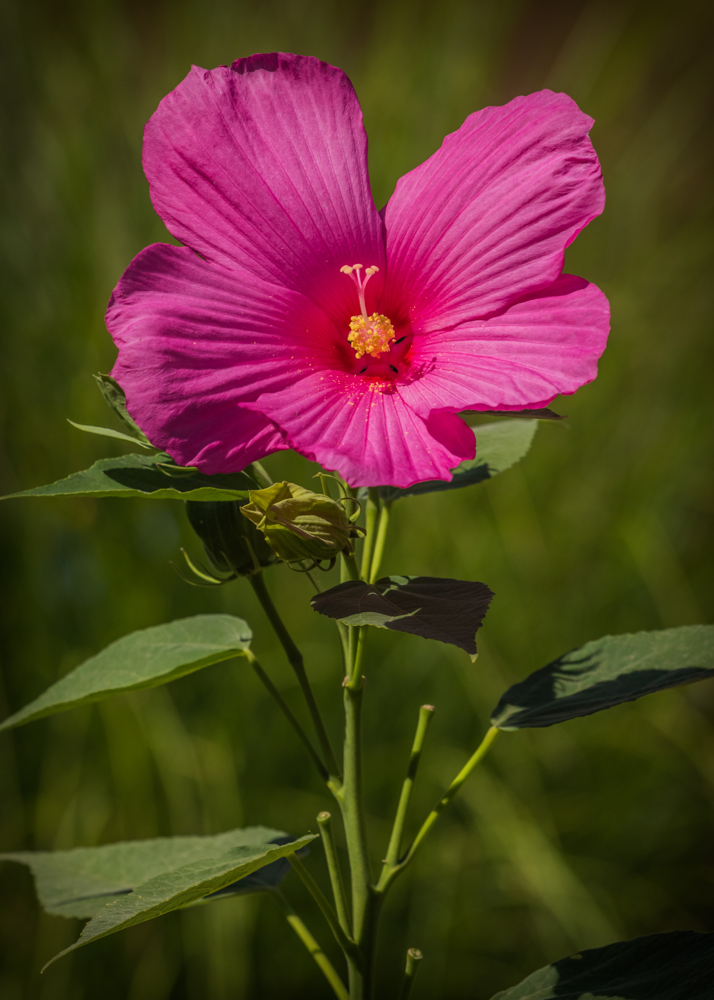

This is the first domino that led to Rooted Love being established. Native to tropical areas like Florida, the hibiscus is known for its big, trumpet-like petals. It can come in various colors, but they lean towards warmer colors like yellow and red.